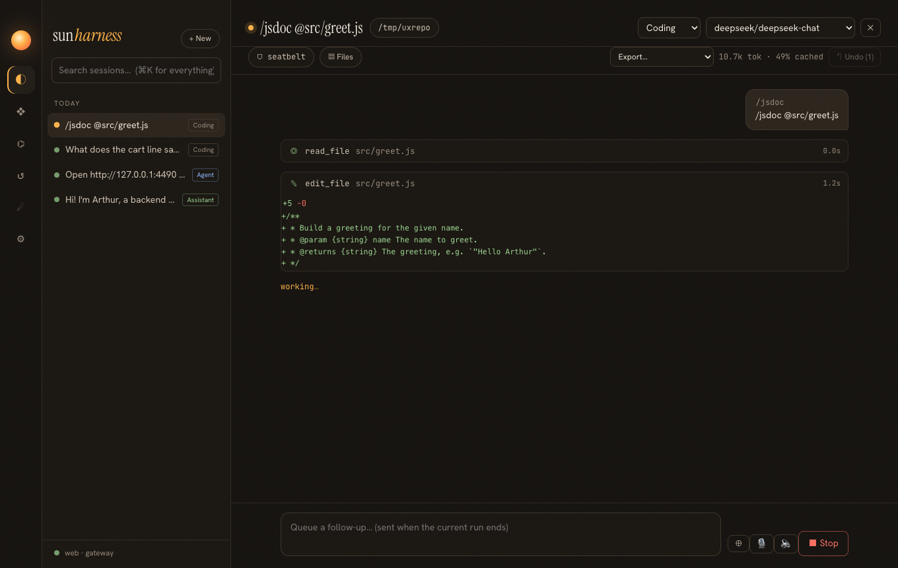
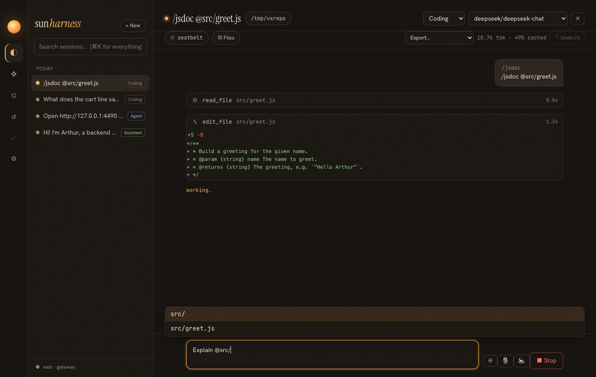
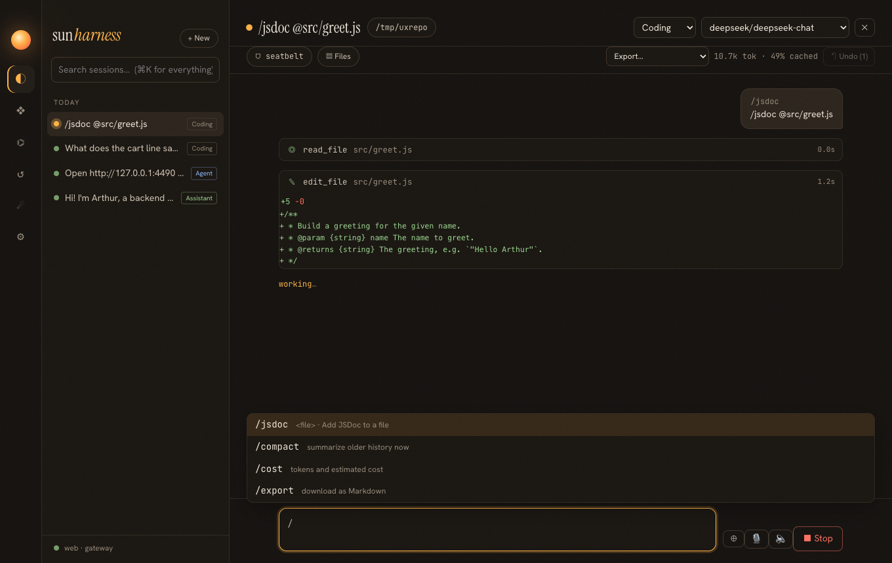
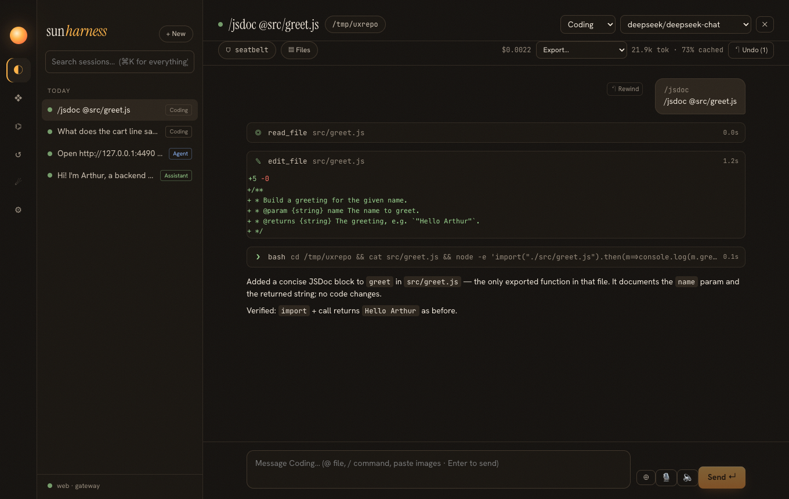
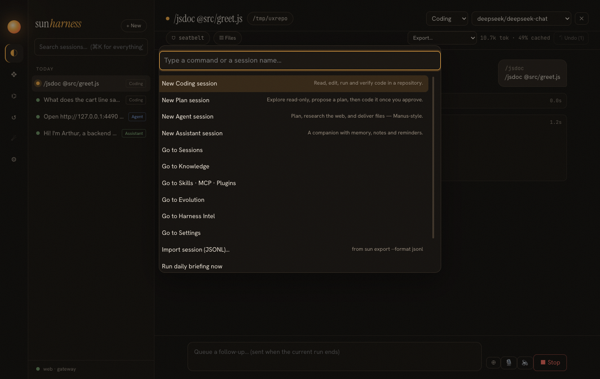
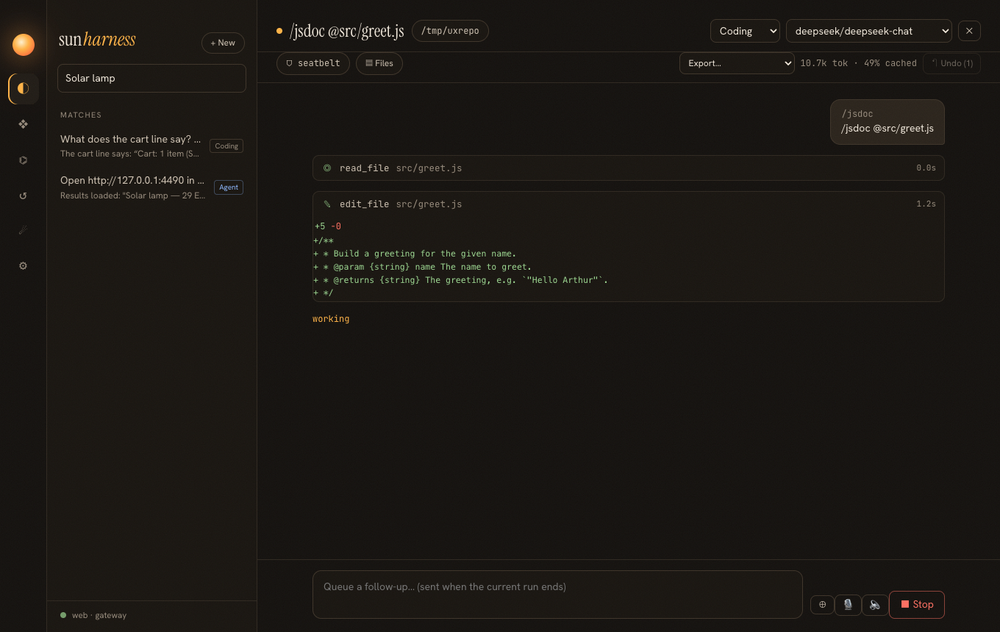

Release 0.5.0 · spec specs/025-ux-from-competitors.md
23 · Borrow the pleasant parts
Phases 0–5 made the harness succeed more often. This step makes it nicer to use, by taking the habits users already have from Claude Code, Codex, Cursor, Manus and Cline, and fitting them to sun-harness's rules: what the model sees is logged, the log is append-only, and every surface behaves the same.
The comparison
| Habit | Where users learned it | How it fits the rules |
|---|---|---|
Custom /commands | Claude Code, Codex | expanded in the host; the log keeps both the prompt and what was typed |
@file mentions, completion | Cursor, Claude Code | attachments are inlined into the logged message |
| Inline diffs | Cursor, Cline | a human-only field on the tool result; not sent to the model |
/cost | Claude Code, Cursor | derived from logged usage and a price table |
| Rewind | Claude Code, Cursor | a fork: a new log from before a message; the old one stays |
| Export, share | Codex, ChatGPT | Markdown / HTML / JSONL straight from the log; JSONL imports |
| ⌘K, search, notifications | Claude Desktop, Raycast, Manus | desktop-only; read state, never change it |
| Images | Claude Code, Cursor | copied to attachments, logged by path, loaded per request |
Status line, stream-json, /compact | Claude Code | views of the log; compaction is the existing mechanism, on demand |
One pipeline for every surface
Why expand commands and mentions in the host, not in each UI?
Because then a bot, the CLI and the desktop cannot disagree, and the log records the real prompt. The original input is kept next to it (user/message.command.input), so the desktop shows what you typed while the model sees the expansion. The first live run did exactly what the docs promise: /jsdoc @src/greet.js became the command's prompt with $1 = @src/greet.js, and the mention then attached the file.
Rewind without rewriting history
Claude Code's rewind feels like going back in time; in an append-only design going back means branching. The fork copies events, carries the mode and model as they were at that point, and copies the checkpoint snapshots so Undo still works in the new branch.
What it looks like

/jsdoc @src/greet.js run on deepseek-chat: the command chip, and the edit card with its diff (+5 −0).
@src/ opens path completion (git-tracked files, ranked by prefix, base name, substring, subsequence).
/ lists custom commands with their argument hints, next to /compact, /cost, /export.


Images, end to end
$ sun run --model qwen/qwen3-vl-plus --image cart.png --output stream-json "What does the cart line say?"
{"kind":"event", … "type":"user/message", … "images":[{"path":"…/attachments/…/1.png","mime":"image/png"}] …}
{"kind":"event", … "type":"assistant/message","text":"The cart line says: “Cart: 1 item (Solar lamp)”." …}
{"type":"result", … "status":"idle", … "costUsd":0.0013}The screenshot was the one the browser agent had taken on page 20. A text-only model in the same session gets "2 image(s) attached; this model cannot see images" instead of a provider error.
A bug the live test found: silent streams
The session stayed "working" for minutes after an edit. What happened?
The tool result was logged, the next request went out, and the HTTPS connection to the provider stayed open with no data. Nothing had a deadline, so a truly dead connection would have hung the run forever. Codex and Claude Code put timeouts on streams; sun now does too. A watchdog aborts a request with no headers within 90 s or no data for 120 s and raises a retryable network error; after the retries the session pauses as network, which auto-resume picks up. That provider answered after more than two minutes this time, but the test (idleMs: 300 against a server that sends one chunk and goes quiet) now proves the failure mode is handled.
Verified
| Check | Result |
|---|---|
commands: precedence, frontmatter, $ARGUMENTS/$1, namespaces, mode switch, bots | pass |
| mentions: files, folders, images; emails, missing and outside paths ignored; completion ranking | pass |
| diff, pricing with cache discount and prefix rules, vision detection | pass |
| images stored, sent to a vision model, replaced by a note for a text model; OpenAI and Anthropic wire formats | pass |
| rewind with file restore and copied checkpoints; export Markdown/HTML/JSONL; import; search; /compact | pass |
stalled stream aborted in < 2 s with idleMs: 300 | pass |
live: qwen3-vl-plus read a screenshot; deepseek-chat ran /jsdoc @src/greet.js; desktop screenshots above | pass |
Users bring habits from the tools they already use. Adopt the habits, keep your own invariants: here every one of them became a view of, or an append to, the same log.